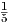

MATP6600/ISYE6780 Nonlinear Programming, Homework 1.
Due: Thursday, September 8, 2016.
for scalars z. Show that the nonlinear program
is equivalent to a linear programming problem.
is a subspace of IRn. (Hint: An affine combination of points a1,...,ak is a point z = ∑ i=1kλiai with ∑ i=1kλi = 1. You may assume that a set is affine if and only if every affine combination of points in the set is also in the set.)
Let x :=  ∑ i=15xi. Use the method given in the proof of Carathéodory’s theorem to express x as a convex combination of three of the points x1,…,x5.
| John Mitchell |
| Amos Eaton 325 |
| x6915 |
| mitchj at rpi dot edu |
| Office hours: Monday 2.0 – 5.0, Wednesday 11.0 – 1.0. |